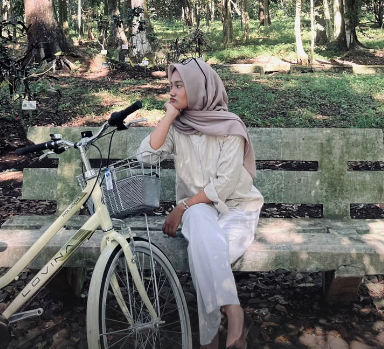
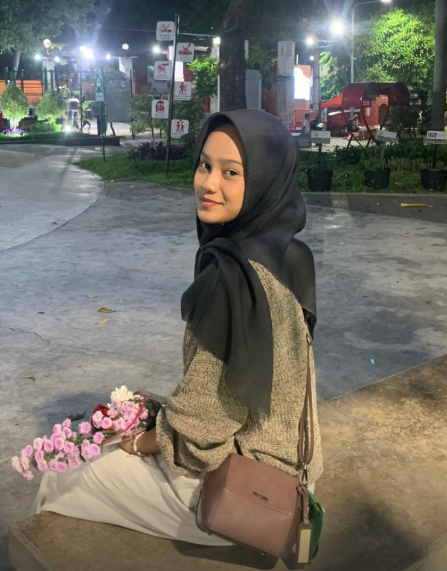

HILUUUWWWW CANTIIICUUUU
Selamat datang di website milik queen of sapyy, disini ada sedikit cerita yang hanya dapat diakses dan diketahui oleh pemilik website ini sendiri yaitu Fathiyah Nur Santoso. Dengan keisenganku ini aku ingin menitipkan doa doa baik serta harapan pada kesehatan kamu, kelancaran urusan kamu, semua hal yang ingin kamu capai di dunia dan di akhirat. Semoga bebe selalu dalam lindungan Allah SWT.
Mau cari buryam
CFD ngidam sabuba

Kebun Raya Purwodadi
Bebe lagi jalan-jalan sama inong

Kota Tua Surabaya
First time beliin kamu fresh flower
BEBE DENGERIN INI YAA!!!
Ada perasaan yang gabisa aku ungkapin lewat kata-kata, ini jadi representasi pernyataan aku selama ini buat kamu
Intronya kamu banget deeehh